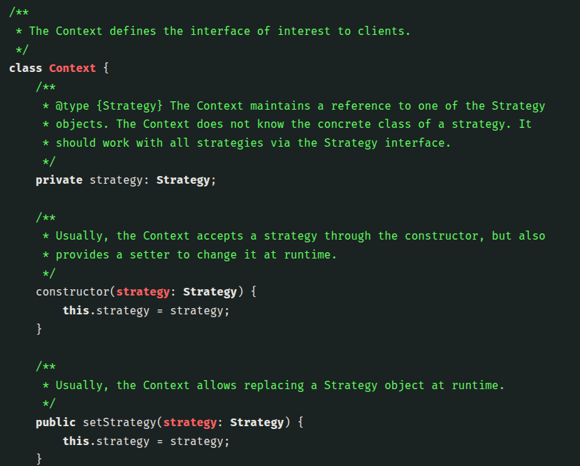
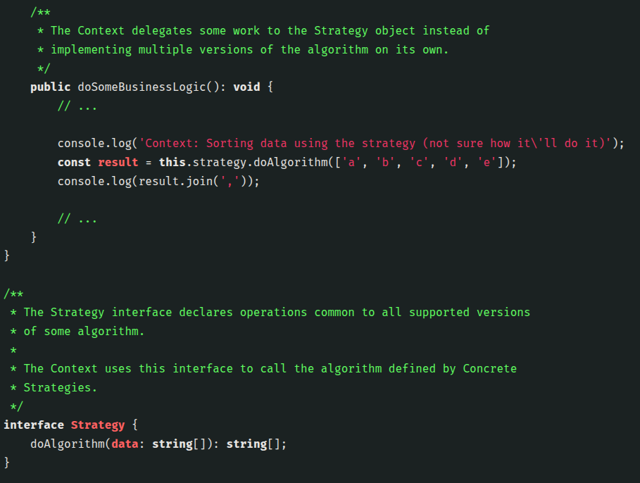
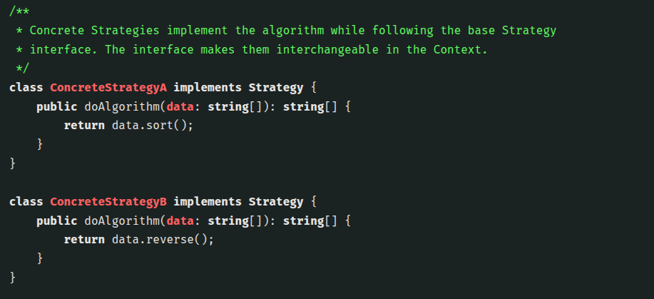

The context isn’t responsible for selecting an appropriate algorithm for the job. Instead, the client passes the desired strategy to the context. In fact, the context doesn’t know much about strategies. It works with all strategies through the same generic interface, which only exposes a single method for triggering the algorithm encapsulated within the selected strategy. This way the context becomes independent of concrete strategies, so you can add new algorithms or modify existing ones without changing the code of the context or other strategies.
In our navigation app, each routing algorithm can be extracted to its own class with a single buildRoute method. The method accepts an origin and destination and returns a collection of the route’s checkpoints. Even though given the same arguments, each routing class might build a different route, the main navigator class doesn’t really care which algorithm is selected since its primary job is to render a set of checkpoints on the map. The class has a method for switching the active routing strategy, so its clients, such as the buttons in the user interface, can replace the currently selected routing behavior with another one.

